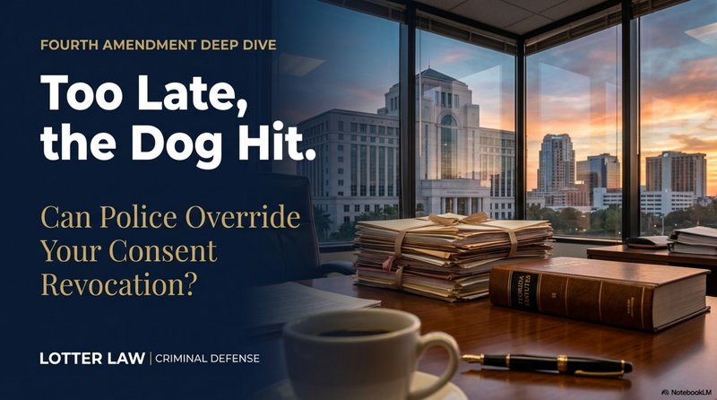

"Too Late, the Dog Hit": Can Police Override Your Consent Revocation?

A scene from the movie R.I.P. captures a moment every defense attorney has seen: Police conducting a consent search. A drug dog alerts. The homeowner says no. Officers respond: "Too late, the dog hit - we have probable cause."
It sounds authoritative. It feels like the law. But is it legally correct? Can a drug dog alert during a consensual search automatically override your right to withdraw consent? The answer reveals fundamental principles about the Fourth Amendment - and why understanding consent search limits can make or break a criminal case.
The Scenario: Consent Search Meets Drug Dog Alert
Here's the setup from the movie:
- Officers ask to search the house
- The homeowner consents
- During the search, a drug dog alerts on the attic access
- The homeowner says: "You can't search up there"
- Officers reply: "Too late - the dog hit. We have probable cause"
This raises three critical legal questions:
The Three Legal Questions
- Can you revoke consent during a search?
- Does a drug dog alert create independent probable cause?
- Can probable cause override a revocation of consent?
Let's break down each question.
Question 1: Can You Revoke Consent?
Yes - absolutely. This is one of the most important rights citizens have during police encounters.
Consent to search is voluntary. The Supreme Court has made clear that you can:
- Limit the scope of consent when you give it ("you can search the living room but not the bedrooms")
- Withdraw consent at any time ("actually, I changed my mind - please leave")
- Specify what can be searched ("you can look in containers, but not open locked boxes")
The foundational case is Florida v. Jimeno (1991), where the Supreme Court held that the scope of consent is defined by what a reasonable person would understand. If you consent to search your car for drugs, that includes containers that could hold drugs. But you're always free to say "not there" or "stop."
Florida's Rule on Consent Revocation
Florida courts follow this principle strictly. In State v. Kerr (Fla. 2d DCA 1994), the court held that when a defendant clearly withdraws consent, police must stop searching immediately. Anything found after revocation is inadmissible.
So in the movie scenario, the homeowner absolutely has the right to say "you can't search the attic." The question is: does the drug dog alert change that?
Question 2: Does a Drug Dog Alert Create Probable Cause?
Generally, yes - if the dog is reliable and alerts in a place officers are lawfully present.
The Supreme Court addressed this in Florida v. Harris (2013). That case involved a traffic stop where a drug dog alerted on a vehicle. The Court held that a well-trained drug dog's alert can provide probable cause for a search, as long as the dog's reliability is established.
But here's the critical distinction: the dog must alert in a place where officers have lawful authority to be.
The "Lawful Presence" Requirement
A drug dog alert only creates probable cause if it occurs during a lawful encounter. This means:
- Lawful: Dog alerts during a traffic stop with reasonable suspicion → probable cause established
- Lawful: Dog alerts while officers are conducting a valid consent search → probable cause established
- Unlawful: Dog alerts after consent is revoked and officers continue searching → fruit of the poisonous tree
In the movie scenario, officers were conducting a consent search when the dog alerted. At that moment, they were lawfully present. That means the alert likely did create probable cause.
Question 3: Can Probable Cause Override Revocation of Consent?
This is where the officers' "too late" claim gets interesting. The answer is: it depends on what they're claiming.
If officers are saying "your consent already covered this area, so we can keep searching" - that's wrong. You can revoke consent at any time, even mid-search.
But if officers are saying "the dog alert gave us independent probable cause, so we no longer need your consent" - that's only partially correct.
Here's the critical distinction that officers often blur:
Probable Cause vs. Search Authority
- Consent - You control this. You can give it, limit it, and revoke it at any time. When you revoke consent, the consent search must stop immediately.
- Probable Cause - If officers develop probable cause during a lawful encounter (like when a drug dog alerts), they now have grounds to obtain a search warrant - but probable cause alone doesn't eliminate the warrant requirement.
- What Officers CAN Do: Secure the scene, conduct a protective sweep for safety, and apply for a search warrant based on the dog alert.
- What Officers CANNOT Do: Continue searching after consent is revoked just because the dog alerted - unless exigent circumstances exist (like imminent destruction of evidence).
So if the dog alerts in your house and you immediately revoke consent, here's what happens legally:
- The consent search must stop
- Officers can secure the scene (prevent destruction of evidence)
- Officers can conduct a protective sweep for their safety
- Officers can apply for a search warrant based on the dog alert
- Officers generally cannot keep searching without a warrant - unless they can prove exigent circumstances
The "too late" claim is misleading. It's not too late to revoke consent - but the dog alert gives officers probable cause to get a warrant. The key is whether they actually get that warrant or try to continue searching based on probable cause alone.
But Wait - What About the Attic?
Here's where defense attorneys find opportunities. Let's look at the specific facts of the movie scenario:
- Officers were in the house with consent
- The dog alerted on the attic access
- The homeowner immediately revoked consent for the attic
The critical question becomes: Was the attic access within the scope of the original consent?
If the homeowner consented to "search the house" without limiting areas, a court would likely find that includes all accessible areas - including the attic. The dog's alert on that lawfully accessible space creates probable cause.
But if the homeowner had originally said "you can search the first floor only, not upstairs" - then officers walking a dog to the attic access might have exceeded the scope of consent. If they exceeded consent, the dog alert might be fruit of the poisonous tree.
Timing Matters: When Did Consent End?
Another defense angle: exactly when did the homeowner revoke consent, and what had officers already observed?
If the sequence was:
Sequence A: Alert First
1. Officers bring dog into home with consent
2. Dog alerts on attic
3. Homeowner says "you can't search there"
4. Officers say "we have probable cause"
Result: Probable cause was established before revocation - officers likely win.
But if the sequence was:
Sequence B: Revocation First
1. Officers bring dog into home with consent
2. Homeowner says "actually, don't go near the attic"
3. Officers ignore this and bring dog to attic access
4. Dog alerts
Result: Officers exceeded consent before the alert - defense has suppression argument.
The difference is critical. In Sequence A, the dog alert happened during a lawful search. In Sequence B, the dog alert happened after officers violated the homeowner's revocation.
What About Getting a Warrant?
If officers have probable cause from a dog alert, why not just get a warrant?
The answer is: they often do - especially when consent is clearly revoked and the situation isn't urgent.
But the legal question is whether they're required to get a warrant. If probable cause exists and there's risk that evidence could be destroyed (exigent circumstances), officers can act immediately without a warrant.
Courts generally find exigent circumstances when:
- Evidence could be easily destroyed (drugs can be flushed)
- There are other people in the home who could remove evidence
- The suspect might flee
- Obtaining a warrant would give time to destroy evidence
In the movie scenario, if officers have probable cause from the dog alert and believe drugs are in the attic, they can argue exigent circumstances justify immediate entry.
Florida Case Law on Consent and Dog Alerts
Florida courts have addressed similar situations:
In State v. Betz (Fla. 5th DCA 2006), officers obtained consent to search a home. During the search, they found marijuana in plain view. The defendant tried to revoke consent at that point, but the court held that the marijuana in plain view gave officers probable cause independent of consent.
Similarly, in Cox v. State (Fla. 2d DCA 1999), a drug dog alerted during a lawful traffic stop. The defendant argued the dog was unreliable. The court held that an alert from a certified drug dog creates a rebuttable presumption of probable cause - meaning it's valid unless the defendant can prove the dog was unreliable.
But Florida courts also protect against consent scope violations. In State v. Wells (Fla. 1st DCA 2003), officers exceeded the scope of consent to search a vehicle by opening a locked container the defendant had specifically excluded. The evidence was suppressed.
Practical Takeaways: Protecting Your Rights
If police ask to search your home or vehicle, remember:
- You can refuse consent entirely. "I do not consent to searches" is a complete sentence.
- You can limit consent. "You can search the car, but not the trunk."
- You can revoke consent. "I'm no longer comfortable with this - please stop."
- Be clear and unambiguous. Don't hint or suggest - clearly state your limits.
- Document if possible. If you revoke consent, say it clearly in front of witnesses or on camera.
But also understand: If police develop probable cause during a lawful encounter, your consent becomes legally irrelevant. That doesn't mean you did anything wrong - it means the legal authority for the search has shifted.
The Defense Attorney's Analysis
When I see a case like the movie scenario, here's what I investigate:
Key Defense Questions
- Was the original consent voluntary, or was it coerced?
- What was the scope of the original consent?
- Did my client clearly revoke consent before the dog alert?
- Is the drug dog certified and reliable?
- Were officers in a lawful location when the dog alerted?
- Did officers exceed the scope of consent before establishing probable cause?
- Was there really an exigent circumstance, or could they have obtained a warrant?
If any of these answers favor the defense, we may have grounds for a motion to suppress. Even in cases where the search seems obviously valid, the details matter. I've won suppression motions on timing alone - officers waited 15 minutes after a dog alert, giving my client time to revoke consent and eliminating any exigency.
The Bottom Line: "Too Late" Is Sometimes Correct
So were the officers in the movie right when they said "too late, the dog hit"?
Partially - but misleadingly. If the dog alerted during a lawful consent search, that alert created probable cause for a search warrant. But the homeowner's revocation does stop the consent search. Officers would need to either get a warrant or prove exigent circumstances to continue searching.
The officers' claim implies they can keep searching without a warrant - that's where it becomes questionable. A good defense attorney would challenge:
- Was consent really voluntary?
- Did consent include the attic area when given?
- Was the dog certified and reliable?
- Did officers actually get a warrant, or did they claim exigent circumstances?
- If exigent circumstances, were they real or manufactured?
- How much time passed between the dog alert and the continued search?
In many cases, officers will secure the scene and quickly obtain a telephonic warrant - making the search valid. But if they continued searching immediately after revocation without a warrant and without true exigent circumstances, a motion to suppress could succeed.
The difference between "probable cause for a warrant" and "authority to search" is where cases are won and lost.
Did Police Search After You Withdrew Consent?
If you gave consent to search and then changed your mind - or if a drug dog alerted during a search and police claimed they no longer needed permission - those details could be critical to your defense. Consent search cases often turn on timing, scope, and whether probable cause was truly established.
Contact Lotter Law at 407-500-7000 for a free consultation. As a former state trooper and deputy sheriff, I know how these searches unfold - and when officers cross the line.

Jeff Lotter
Criminal Defense Attorney | Former State Trooper
Jeff Lotter is an Orlando criminal defense attorney and former Florida Highway Patrol trooper. He uses his law enforcement experience to identify Fourth Amendment violations and build stronger defenses for his clients.
Related Articles
Your Rights During a Traffic Stop
What you're required to do - and what you're not.
Cannabis Odor and Probable Cause
Can police search your car based on marijuana smell alone?
Search Incident to Arrest: The Mangione Case
What police can search when they arrest you.
Motion to Suppress: What to Expect
How suppression hearings work and what they can accomplish.